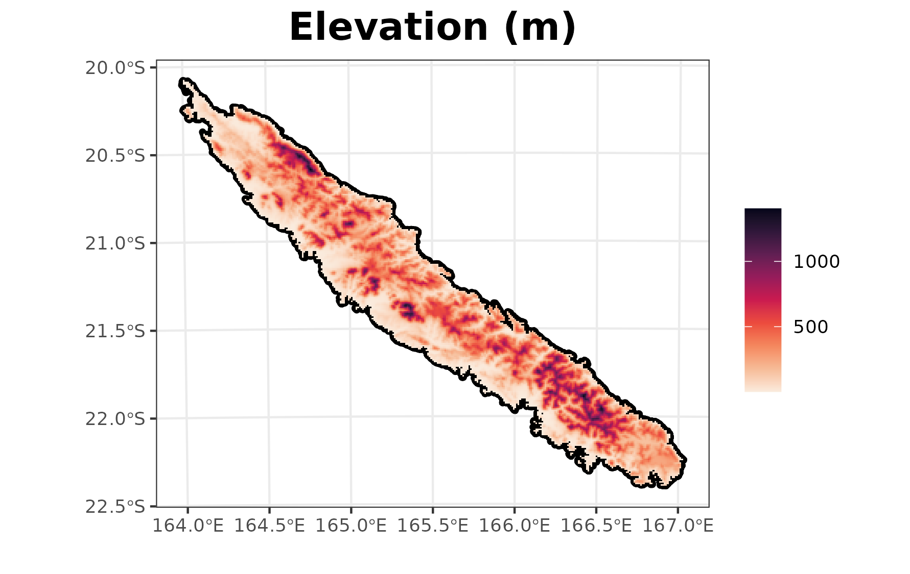
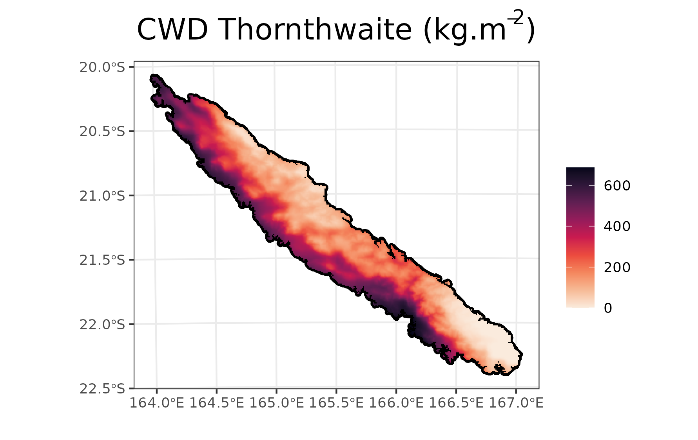

Install the development version of gecevar from GitHub with
devtools::install_github("ghislainv/gecevar")
In this example, we take New Caledonia as example. It’s an island
near Australia and New Zealand. We need to begin to get the EPSG code
for New Caledonia. It can be found on epsg.io. Beware to keep the same EPSG code
for all functions in the gecevar package.
name <- "New Caledonia"
epsg <- 3163
all_extent <- transform_shp_country_extent(EPSG = epsg,
country_name = name)
extent <- all_extent[1]
extent_latlon <- as.numeric(all_extent[2:5])The output is a vector of length 5. First element is a character with extent of New Caledonia according to EPSG:3163. The following four elements are extent in latitude and longitude coordinates (EPSG:4326).
One variable is protected area named WDPA in downloaded file. This
variable need an identification by country name. Make sure that our
country name is available in www.protectedplanet.net.
Otherwise leave country_name = NULL.
environ_path <- get_env_variables(extent_latlon = extent_latlon,
extent = extent,
EPSG = epsg,
country_name = "New Caledonia",
destination = here("vignettes",
"get_started_files"),
resolution = 1000,
rm_download = FALSE,
gisBase = NULL)We can look at the variable names in the raster.
We can plot some data, eg. the elevation.
plot(r_env$elevation, range = c(0, 2000), main = "Elevation (m)",
cex.main = 2, plg = list(cex = 1), pax = list(cex.axis = 1))
Climatic variables are extract from chelsa-climate.org.
We get with get_chelsa_current function many variables.
Variables give the average value on the data recovered between 1981 and
2010.
climate_path <- get_chelsa_current(extent = extent,
EPSG = epsg,
destination = here("vignettes",
"get_started_files"),
resolution = 1000,
rm_download = FALSE)We can look at the variable names in the raster.
We can plot some data, eg. the climatic water deficit computed from the Thornthwaite equation.
plot(r_clim$cwd_thornthwaite), range = c(0, 500), main = "CWD Thornthwaite (m)",
cex.main = 2, plg = list(cex = 1), pax = list(cex.axis = 1))
Now you can merge all our variables in one file.
merge_path <- merge_files(environ_path = environ_path,
climat_path = climat_path,
destination = "/home/pierre/Bureau/NC")Output is the absolute path to the gecevar.tif file
which was created.
Extracted from chelsa-climate.org the climate data from the five available models, namely, GFDL-ESM4, IPSL-CM6A-LR, MPI-ESM1-2-HR, MRI-ESM2-0 and UKESM1-0-LL. Compute the average of these models for a SSP chosen.
get_chelsa_futur(extent = extent,
EPSG = epsg,
destination = "/home/pierre/Bureau/NC",
resolution = 1000,
phase = "2071-2100",
SSP = 585,
rm_download = FALSE)